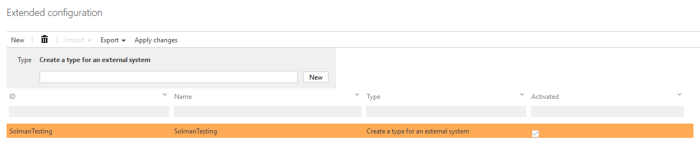
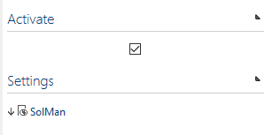
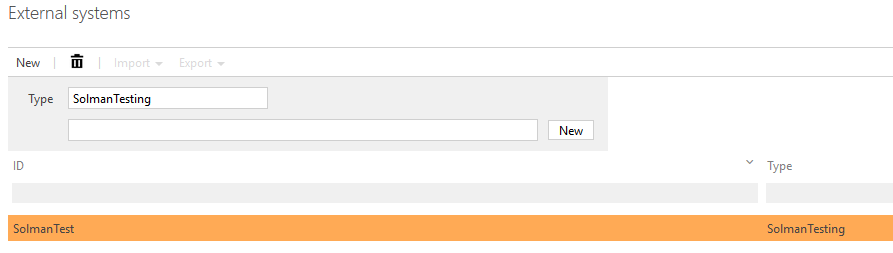
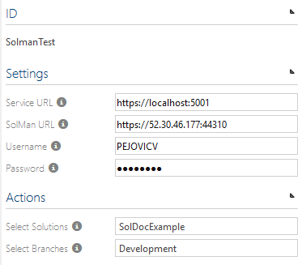
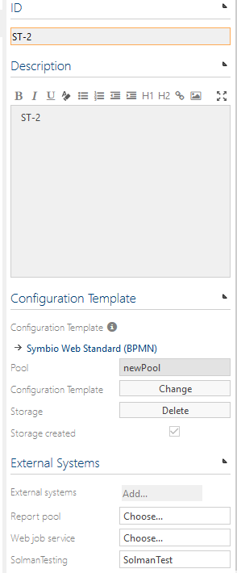

SAP SolMan Interface Set-up Documentation
This document contains information on how to set-up SolMan service and configure Symbio so it can use it.
Service set-up
1. Create a SQL Server database which will be used by the service as a configStore.
2. In that database create a table dbo.settings with columns: Key(nvarchar(1024), null) and Value(nvarchar(max), null).
3. In appsettings.json set the following configuration:
{
"ConfigStoreConnection": "Server=[SERVERNAME];Database=[DATABASENAME];Trusted_Connection=True;",
"ConfigStoreTableName": "settings",
"Serilog": {
"MinimumLevel": "Verbose",
"WriteTo": [
{
"Name": "File",
"Args": {
"path": "Logs\\log.txt",
"rollingInterval": "Day"
}
}]
},
"AllowedHosts": "*"
}
4. (Optional) Set sensitive data in user secrets. (in development "ConfigStoreConnection").
5. (Optional) Change Serilog settings in appsetting.json if needed.
Set up Symbio to use the service
1. Go to Symbio System Administration home and switch to Editor mode.
2. Go to the admin menu, and navigate to the Extended configuration.
3. Create new type for an external system, and for the settings upload the SolMan.syex file from the XmlFiles/Bin folder of the service project (if file is missing run the build.ps1 in XmlFiles to create the file).
4. Check the "Activate" checkbox and click on the "APPLY CHANGES" button!!!
5. Go to the External Systems page.
6. Create an new instance of the external system type that you created in Step 3.
7. In the Service URL field enter the url of the Solman interface microservice.
8. In the SolMan URL field enter the base url of the SolMan API.
9. In the Username field enter your username for the SolMan API.
10. In In the Password field enter your password for the SolMan API.
11. If everything is configured correctly you can now select a SolMan solution from the dropdown list.
12. After you have selected the solution, you can select a branch and the configuration is done.
13. Now, when you create new storage, you can select your SolMan external system in External Systems. During this process Symbio will be linked to the microservice, and auth token will be created.
Picutre 1 - New type for external system

Picture 2 - Upload .SYEX file

Picture 3 - Create new instance of solman external system type

Picture 4 - Enter settings for solman external system type

Picture 5 - Configure storage
